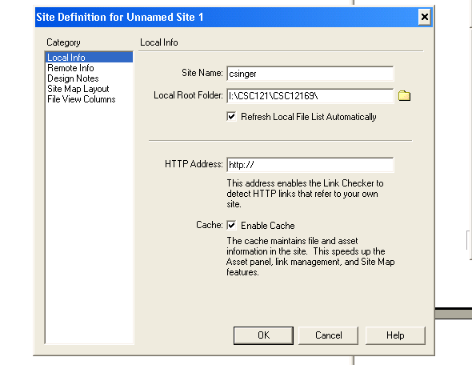
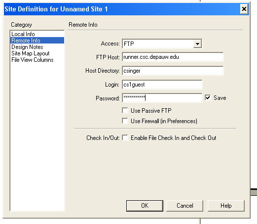
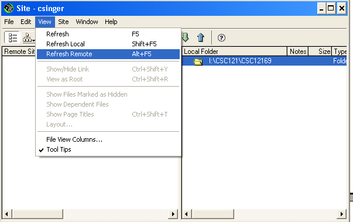
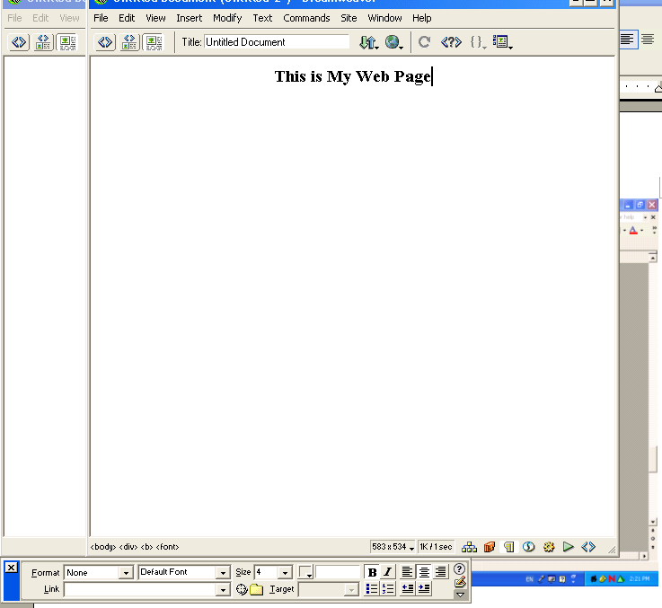

Maintained by Brian Howard (
bhoward@depauw.edu ).
Last updated
| Overview | Schedule | Announcements | Resources | Assignments | Home |
| Overview |
The web authoring tool you will use is Macromedia's Dreamweaver. You will 1) set up a Dreamweaver web page authoring environment, 2) author a few simple web pages, and 3) embed Java applications in web pages as applets. |
| Setup |
You will need to set up local and remote sites (folders) for your web site. The local folder will be the Lab13 folder that you copied to your I: drive folder. The remote folder will be the web site folder where the pages you put into production will reside.
You are now set up to author web pages.    |
| Create |
Click on File/New in a Dreamweaver window to create a new and empty web page. You can author a web page similar to using a word processor such as MS Word. In the figure below that there is a small "properties" window at the bottom that can be used to format the text being typed or any selected text. Note that the text has been sized to 4, bolded and centered. Note also that if you wanted this text to be a hyperlink (a clickable link to another web page), you could browse and select the linked-to page all within the properties window. Play a bit and create a web page with a few different kinds of things on it. When you are ready you should upload this page to the web server. First save the page, giving it a name like, mypage.htm. Next, select the page in the local view by clicking on it, then click on the fat up-arrow in the tool bar below the main window. This will copy the file from your local folder to the web folder. You may answer either yes or no to the question, Copy dependent files. Now go to the page you created by launching Internet Explorer and entering the url: http://runner.csc.depauw.edu/csc121/<your folder name>/<your page name>.htm The process of creating a web site is similar to writing a program. For each page in the site, you develop it locally, see how it looks in a browser, and keep editing-viewing until the page looks the way you want for the world to view it. |
| Transfer |
Copy the entire local site to the production site. Click on the top folder in the local view and then click the fat up arrow. Respond yes, to transfer the entire site. |
| Do |
Create three web pages, calculator.htm, graphic.htm, and simple.htm. Pattern each of these after shuttle.htm but change the applet tag information accordingly... calculator.class and .../csc121/<your username>/calculator, and so on. "Put" these pages to the remote site when you finish creating them. |
| Modify |
Create or modify the following applets accordingly (don't forget that you can test the applet in BlueJ before uploading it to the web site):
|
| Edit |
Finally, edit the web page lab13.htm, so that it has a link to each of the three web pages you just completed. Mimic the link to Shuttle, already in that page. Now browse your site to make sure all the links and all the applets are working. |
| Overview | Schedule | Announcements | Resources | Assignments | Home |

 DePauw
University , Computer Science
Department , Spring 2005
DePauw
University , Computer Science
Department , Spring 2005
Maintained by Brian
Howard ( bhoward@depauw.edu ).
Last updated